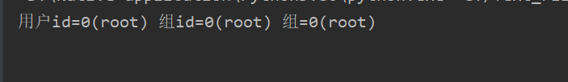

# 前言
通过 python 打造自己的 SSH (Secure Shell)。
# 通过 paramiko 使用 SSH
# 例子
paramiko 是第三方库，要用 pip 安装。 pip install paramiko
在 python 的世界里，可以使用原始套接字和一些加密函数创建自己的 SSH 客户端或者服务端。但 python 中也有现成模块，使用 paramiko 库中的 PyCrypto 能让我们轻松使用 SSH2 协议
在示例中，我们首先需要引入 paramiko 库，然后使用 SSHClient() 方法实例化对象，然后使用 load_host_key() 方法密钥认证的方式连接服务器，这里让实验可视化使用 connect() 方法以明文密码的方式连接服务器，连接服务器之前可以使用 set_missing_host_key_policy() 设置对于服务器密钥的策略，使用 AutoAddPolicy() 设置策略为自动添加服务器密钥，然后使用 get_transport() 与 open_session() 方法来得到 ssh 加密通道和打开线程，运用 if 语句与 acitve 属性判断线程是否存活，如果存活，使用 exec_command() 来执行我们想要执行的命令，通过 recv() 方法将命令在服务器执行后的结果返回给我们，这里也需要注意编码问题
Code
import paramiko | |
def loging_shh(ip, user, passwd, command): | |
client = paramiko.SSHClient() | |
# client.load_host_keys('/root/.ssh/konw_hosts') | |
client.set_missing_host_key_policy(paramiko.AutoAddPolicy()) | |
client.connect(ip, username=user, password=passwd) | |
ssh_session = client.get_transport().open_session() | |
if ssh_session.active: | |
ssh_session.exec_command(command) | |
print(ssh_session.recv(1024).decode('utf-8')) | |
if __name__ == "__main__": | |
loging_shh('192.168.199.128', 'root', 'root', 'id') |
运行程序后得到了服务器执行命令后的结果

# 编写返回命令的 SSH
通常情况下，可以使用 SSH 客户端连接 SSH 服务器，但 Windows 本身不一定装有 SSH 服务端，所以我们需要反向将命令从 SSH 服务端发送给 SSH 客户端。（即客户端控制服务端）
Code